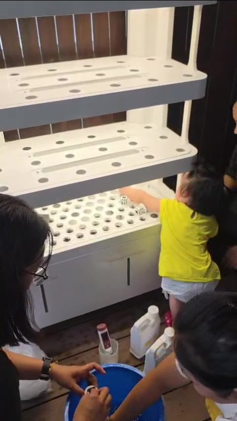

A grow-your-own STEM lab for schools & preschools
Children seed, grow, harvest and eat their own greens in 4–5 weeks, right in the classroom.
Seed to plate within a term.
The full cycle fits inside a school term, so one class sees the whole story, from a tiny seed to a salad they grew.
- Plant about 2 seeds in each sponge cup
- Check water and nutrient levels each week (about 10 minutes)
- Compare crops: pak choy in 4 weeks, lettuce in 5, herbs in 7
- Weigh, harvest and taste what they grew
- Clean, reset and start the next cycle

- Wk 0
Seed & transplant
About 1 hour for the class.
- Wk 1–4
Watch & record
Roots, leaves and water levels, checked weekly.
- Wk 4–5
Harvest day
About 1 hour. Weigh the greens, then eat them.
- Reset
Clean & replant
About 1 hour between cycles.
Lessons that grow on their own.
Plant science
Seeds, roots, light and nutrients, seen through the clear logic of soil-free hydroponics.
Food & health
Where vegetables come from, and how fresh greens taste when picked the same day.
Sustainability
Growing food indoors, in a small space, and harvesting only what is needed.
Measuring & maths
Count cups, time the cycles, weigh the harvest and compare crops.
Two languages
Our crop list carries English and Chinese names, from 生菜 to 香港菜心.
Teamwork
Weekly duty rosters for checking water, and a shared harvest day.

Fits a classroom corner.
- Footprint811 × 433 mm
- Height1,805 mm
- Capacity72 plants on 4 layers + 76 seedlings
- Work per cycleabout 3.5 hours
- Running cost per cycleabout S$22–25
- Deep cleanevery 2–3 months
- Packagefrom S$1,300
The 3.5 hours is usually existing staff time, or the children's activity itself. Package includes delivery, installation, training and one servicing.
Bring a harvest day to your school.
Ask Elaine for a free demo for your teachers or principal.